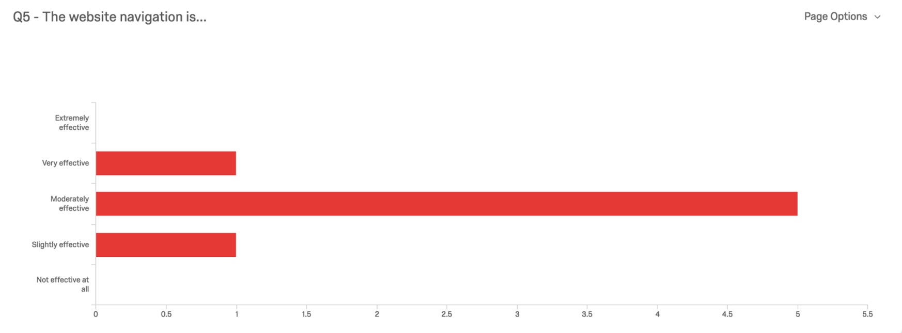

Four University of North Carolina at Chapel Hill students from the Usability and UX Design course led by Associate Professor Laura Ruel designed and conducted a usability test on ncpressfoundation.org. The purpose of this test is to identify common usability issues and provide suggestions for improving user engagement on the website.
The test was composed of a pre-test survey, free observation period, task assignment, and a post-test survey. In total, nine test sessions were conducted over the course of a week.
Overall, the users felt that the website had good information and a clean layout. There were many resources available to them about newspapers and education.
Testing further uncovered a couple of minor, major, and critical problems. The minor problems were the appearance of the homepage photo banner, the outdated news articles, and the unclear purpose and appearance of the right-hand sidebar. Major problems with the website pertained to the complicated navigation system and the overall presentation of the content. Lastly, the most pressing issues found on the website were a few broken links and the lack of clarity in the organization’s purpose and identity.
This report discusses these issues in detail and provides suggestions for how to improve user engagement on the N.C. Press Foundation website.
Purpose
This study was designed to test the website of the North Carolina Press Foundation, ncpressfoundation.org, for user engagement and usability. Tasks were developed to focus on navigating the website and information searching.
Method
A research team of four Usability and UX Design students at the University of North Carolina at Chapel Hill conducted a usability test to assess how users interact with ncpressfoundation.org. The study was designed based off research by Jakob Nielsen, Laura Ruel, and Steven Krug.
Tests were administered between October 24 and October 28, 2016. Individual tests were conducted on campus or in participant’s homes, using a Mac-based computer and either a Firefox, Google Chrome, or Safari web browser. Participants were asked to complete a series of tasks Each session lasted approximately 30-45 minutes.
The study consisted of four main parts: a pre-test survey, free observation, assigned tasks, and a post-test survey. These components are further explained below and copies of the test documents can be found in the Appendix.
We had seven participants between the ages of 21 and 35. All but one of them were female. All of our participants were either White or Asian/Pacific Islander and were enrolled in or had graduated from college. We had one participant who is a teacher. 7 out of 8 of them reported spending 4 to 9 hours on the Internet daily, and that time is mostly spent on a desktop computer or laptop. Four of our participants never read newspapers, two of them read newspapers daily, and one of them reads newspapers once a month. Those who do read news are almost evenly split as to whether they prefer print or online news: 3 to 2 for print news. None of our participants had accessed NCPF before this study.
In this study, there were a few limitations that may have influenced the results. First, the sample size of the participants chosen for the usability tests is small and with mostly similar demographics. Although 80 percent of issues can be discovered with testing five people, according to Jakob Nielson, this still leaves 20 percent of problems undiscovered. In order to better account for this gap of knowledge, it would be best to conduct multiple rounds of tests with a more diverse set of participants. In addition, the participants may have been biased in their commentary by providing softer critiques to please the observer. Lastly, while the same script and methodology is used in each session, each tester conducted their tests separately from the rest of the group, so any differences in the procedures or testing styles of each tester is unaccounted for and may have influenced the results.
Though the first impression of the site was that it looked polished, from a usability standpoint the site was hard to navigate. When asked how easy or difficult it was finding information on the site, 43 percent said “somewhat easy,” 43 percent said “difficult,” and 14 percent said “very difficult.” The majority characterized the navigation overall as “moderately effective.”
These responses were attributed by one participant to a lack of landing pages—having to go at least two layers deep in order to access any pages from the top navigation was frustrating and not intuitive. It would have been helpful to go to a primary page describing the overall purpose of each section rather than having to go to each separate, very specific topic page.
Additionally, most participants at some point navigated off of the website to either the NCPA or NCPS sites through the navigation at the very top of the pages, and they sometimes got turned around not even realizing they had navigated away from the NCPF site due to the similar look of each site. There was also no information showing why these pages were connected at all, which added to the confusion.
There was a general consensus among participants that the content was too text heavy and negatively affected their experience on the website; 85 percent of participants said the site was not engaging due to the large blocks of text on each page. Many users suggested integrating graphics with the content to break up the text and highlight certain sections and resources to make it easier to quickly skim for information.
When the content was not displayed on webpages, they were hidden in linked external PDFs or other downloadable content with little indication of what these documents contain. With non-descriptive hyperlinks, the users were often confused as to where each link would take them and whether or not the information they were seeking would be found.
In addition, by hiding content in PDFs rather than on webpages, the content is unable to be discovered through web search, turning away more potential users. For example, by linking lesson plans using non-descriptive hyperlinks, teachers who want the resources but haven’t heard of NCPF would be unable to come across these documents through Google or some other search engine.
Links in the footer—to Frequently Asked Questions, RSS feed, and Privacy Policy—do not work and only take the user back to the homepage. The voting website link in the bottom news item also does not work. Lastly, the top navigation links to NCPA and NCPS redirect to a page that no longer exists.
Even after perusing the website for up to 30 minutes, the majority of participants still did not know what the purpose of the website was. Although the homepage gave a brief overview of the Foundation’s mission, it did not give tangible examples of what NCPF does for the state to accomplish this mission. There was more information provided on Newspapers in Education, but the page devoted to it was text heavy and vague. An explicit statement of the benefits to teachers or newspapers of being part of NCPF or NIE programs was also missing on either the homepage or the dedicated about pages.
Overall, while these brief overviews may be fine for users coming to the site with previous knowledge of the organization and for a specific purpose, it was not helpful to engaging first time users and giving them a concrete impression of the organization’s core values.
According to the data collected, there was an overall consensus that the website was text-heavy, yet few users understood what the website was about. A few suggestions on how to reconcile this problem are: